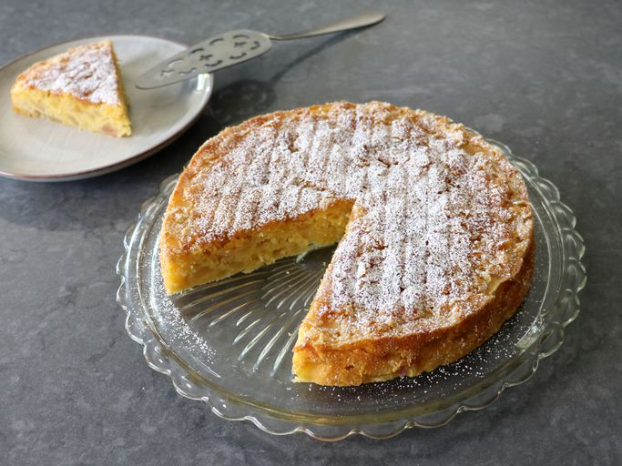

French Apple Cake

Description
This French apple cake is incredibly delicious. France is famous for its fabulously fancy pastries and baked goods, so you might get some skeptic looks when you tell them that this is your favorite apple cake – but trust me – this simple, rustic, easy to make cake is absolutely amazing.
Ingredients
- 3 large baking apples (such as Honeycrisp)
- 2 teaspoons apple cider vinegar
- 1 cup all purpose flour
- 1 teaspoon baking powder
- 1 teaspoon kosher salt
- 1 stick unsalted butter, at room temperature
- 1/2 cup white sugar
Steps
- Preheat the oven to 350 degrees F (175 degrees C). Grease a 9-inch round cake pan with butter and line the bottom with parchment paper.
- Peel (or leave skin on) and core apples; cut into cubes between 1/4 and 3/8-inch in size. A little smaller is okay, but if your cubes are any larger, they won’t get tender enough when baked. Add to a large bowl and toss with apple cider vinegar.
- Mix together flour, baking powder, and salt in a small bowl.
- In another bowl, beat butter, 1/2 cup white sugar, and brown sugar with an electric mixer until light and fluffy. Beat in 1 egg on high speed until it is fully incorporated and the mixture is smooth. Add the second egg and repeat. Mix in rum, vanilla extract, and 1/2 of the flour mixture. When the flour disappears add the rest, and fold in with a spatula.